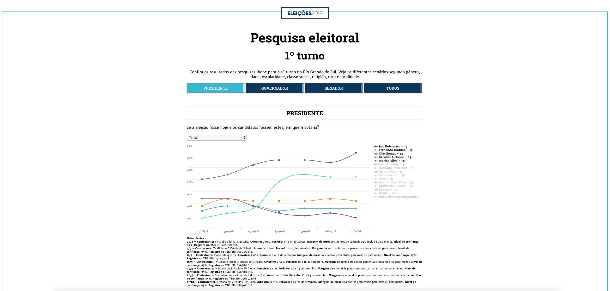
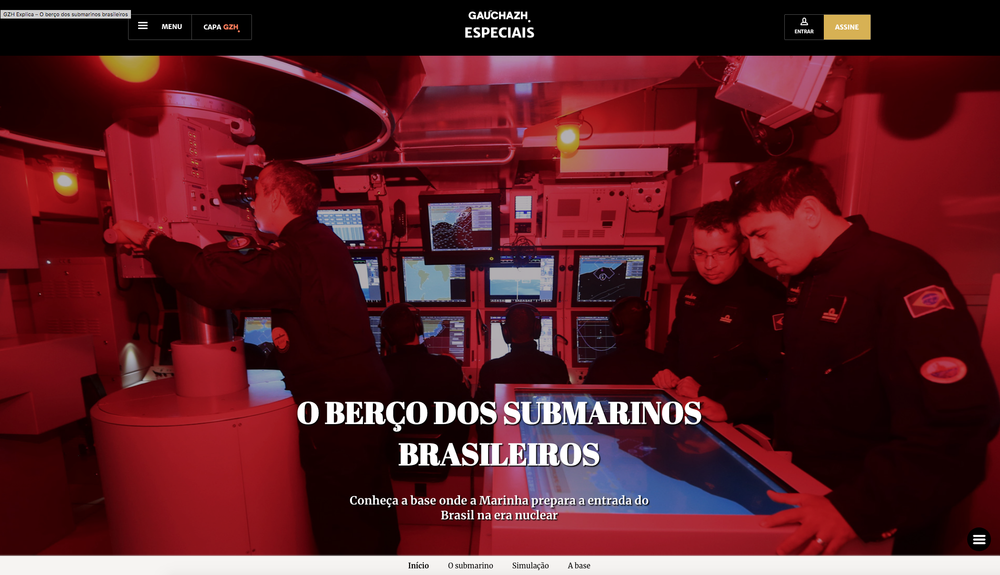

Especiais Online
Sons de Porto Alegre (GaúchaZH)


Especial produzido para GaúchaZH para o aniversário de Porto Alegre. Foram produzidos vídeos com imagens e sons característicos da cidade, que provocam a experiência sensorial dos leitores. Pode ser visto aqui
Ponte do Guaíba (GaúchaZH)
Especial sobre a construção da Ponte do Guaíba com detalhes sobre o projeto e o andamento da obra. Disponível neste link.
Kurt Cobain (GaúchaZH)
Especial que relembra a trajetória do cantor Kurt Cobain e de sua banda Nirvana, no 25º aniversário da sua morte. Está disponível aqui
Beatles – White Album (GaúchaZH)
Especial produzido em comemoração aos 50 anos do White Album, dos Beatles. Cada elemento da imagem remete a uma curiosidade contada em formato de vídeo. Disponível neste link.
Pesquisa Eleitoral (GaúchaZH)
Gráfico interativo com o resultado das pesquisas realizadas pelo Ibope nas eleições de 2018. Pode ser conferido aqui.
Submarinos brasileiro (GaúchaZH)
Especial sobre a base da Marinha na baía de Sepetiba, disponível neste link.
Cambará do Sul (GaúchaZH)
Especial com o roteiro turístico de Cambará do Sul. Pode ser acessado neste link.
Atlas de Porto Alegre(GaúchaZH)

Especial sobre o Atlas Ambiental de Porto Alegre. Disponível neste link